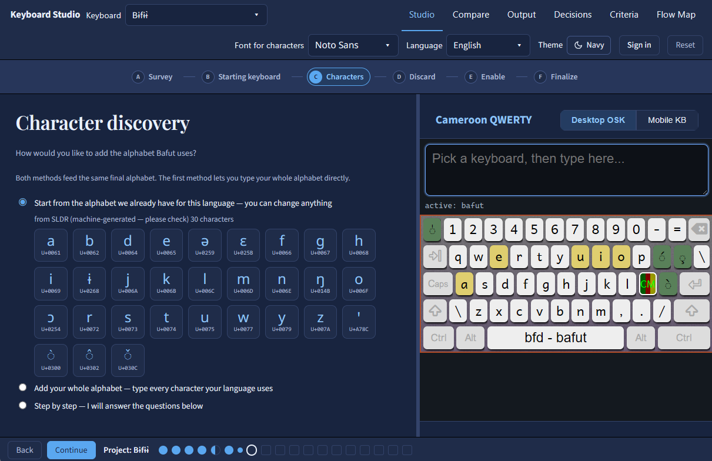

Today: knows the characters, their order, and how they combine.
In the studio: still the author's job, and the one we hope they can focus on. The studio proposes a character inventory; the author corrects it by sight and answers by example.
Keyboard Studio is an experimental, browser-based way to make a Keyman keyboard by answering questions about your language instead of writing code. It began as a hackathon project, built by people who use Keyman, teach it, and share its goal of every language being typeable. The keyboards it makes go through the same review as every other keyboard in the Keyman library.
Keyman has helped people type their own languages since 1992. For many communities it was the first time their language could be typed at all.
Keyman's first release, on Windows
platforms today: Windows, Mac, Linux, iOS, Android, and the web
reviewed keyboards in keymanapp/keyboards
and open source
Behind those keyboards are Keyman Developer and the keyboards repository, each keyboard built, reviewed, and maintained by people who cared about getting it right. Much of the Bible translation, literacy, and language development work we have been part of depends on the foundation that Keyman provides.
What Keyboard Studio uses from Keyman
We are staff and summer associates in SIL's Language Technology Use department. We work with language communities and have relied on Keyman for years.
Many of us have spent years teaching keyboard development in workshops around the world. Again and again, the people who knew their language best were the ones who struggled most to finish a keyboard. They weren't struggling with their language. They were struggling with everything around it: the code, the files that must stay in step, the packaging, and the details a reviewer will rightly ask about.
Keyman Developer is most fruitful for a skilled keyboard author, someone at home with all of that, who can use the complete control it offers. Many first-time authors we've met needed something different: fewer choices at once, a working example to start from, and a suggestion for each answer.
Teaching keyboard development alongside people building keyboards for their own languages.
Our first idea was small: a helper that lets AI coding assistants work with Keyman keyboards, so people already using Keyman Developer could write keyboard code faster.
What would it take for someone who has never built a keyboard to finish one?
It has grown, but it is far younger and less tested than the Keyman Developer pipeline, and it is not an official Keyman project.
Keyboard Studio is our attempt to offer that path: one more way into the Keyman ecosystem, not a way around it. The work still flows into the same repository and the same review.
A skilled keyboard author wears all of these comfortably. Many first-time authors wear only the first. The studio tries to carry the rest for them, and it won't always get it right.
Today: knows the characters, their order, and how they combine.
In the studio: still the author's job, and the one we hope they can focus on. The studio proposes a character inventory; the author corrects it by sight and answers by example.
Today: writes .kmn by hand: stores, groups, deadkeys, virtual-key names, modifier logic.
In the studio: the author picks behaviours from live demos, and the studio writes the .kmn.
Today: keeps .kpj, .kps, HISTORY.md, LICENSE.md and versions in step, by hand.
In the studio: 40 review criteria are built in from the start, and the version and history rules are checked as you go.
Today: writes welcome.htm, readme.htm and the help .php, and keeps the two help pages identical.
In the studio: help pages are generated from the keyboard itself (typing guide, layout pictures, phone and tablet notes), and a check confirms the two pages still match.
Today: Keyman Developer is a Windows application.
In the studio: a browser. Keyman's compiler runs inside the page as WebAssembly.
Today: an English interface and English documentation.
In the studio: a translatable interface (English and French so far, more through Crowdin), and concepts shown by live demo rather than by reading.
Today: keeps desktop, touch, and documentation consistent by hand.
In the studio: one working copy feeds everything. Touch is derived from the locked desktop layout, docs from both, and checks compare modifier names, targets, layers, and copyright holder across files.
Today: codepoints, combining marks, composition order, PUA, fonts.
In the studio: characters are chosen by sight. Codepoints are validated, PUA keyboards go to experimental/, math-Latin look-alikes are blocked, and required fonts must be in the package.
Very few keyboards are built from nothing. In the Keyman repository, most keyboards for a given script cluster around a handful of layouts. For example, 380 of 484 Latin-script keyboards sit on a QWERTY layout. See how all 920 keyboards group.
The studio makes that the starting point on purpose. Every keyboard begins as a copy of one existing keyboard, and you change what your language needs. Anything the studio can't model in that keyboard is kept as it is, never dropped.
When your script has only one or two keyboards in the repository, or none, the studio starts from a basic layout or US QWERTY instead, and you will do more of the work.
A blank field where a reasonable default could have been worked out is a bug.
When the studio can make a reasonable guess, from the keyboard you started with, your language's code, or keyboards for related languages, it offers that guess and tells you where it came from. You confirm it or change it.
Where a guess could be wrong in a way that matters, such as who holds the copyright, it asks instead of guessing.

The author's first real decision is what they are making. Both run the same steps on the same working copy. They differ in the keyboard ID, what the pull request contains, and what the history says.
release/, experimental/ and legacy/Created from source_id vX.Y, with credit to the original keyboard in the pull requestHISTORY.md, a strictly greater version, and the original welcome.htm prose kept. Checks confirm nothing was lost on the way inKeyman's compiler, kmcmplib, validates the keyboard program, and the studio runs it in the browser on every edit. Much of what reviewers ask about on a pull request is in the files around the program: the package, history, licence, help pages, language tags, and touch layout. The studio turns the repository's review checklist into checks and questions, so authors can fix many of these before a reviewer ever sees them.
usealtgr tag when RALT is used7.5 checkCopyright (C) syntax4.5 built inNCAPS leftoverskmcmplib.kvks on-screen keyboard7.16 checkwelcome.htm and help .php drifting apart11.9 checkNamed validation checks in developer/src/kmcmplib/src/.
TSS_LANGUAGE…)platform() argumentsif() store resolutionU+XXXX)context(N) offsetsindex(store, N)In the studio: the full compiler runs in the browser as WebAssembly, so every compiler error and warning reaches the author. Nine of these checks also run in TypeScript as the author types.
The repository's review checklist written out as criteria, plus keyboard-design heuristics and checks for adapted keyboards. Each criterion is handled in one way:
The studio produces it correctly, so the author can't get it wrong: folder placement, .kps file lists, licence syntax, README links, help-page header.
A named check stops the output until it is fixed: version rules, HISTORY format, copyright consistency across files, targets, fonts, welcome.htm/.php parity, touch-layout limits.
Needs judgement, so it becomes a question with a proposed answer: is the description meaningful, are the tags minimal, does the RTL flag match the script.
Can't be known from the files. The author confirms these before submitting, and the reviewers make the call.
| ID | Section | Criterion | Handled by |
|---|
Linguists, community members, teachers, and literacy workers who know a language well and have not built a keyboard before.
If you already write keyboards in Keyman Developer, it is still the most powerful tool. It can do far more than the studio, and the studio does not try to match it. We have deliberately kept the studio to a narrower set of well-understood keyboard designs.
Every keyboard submitted from the studio goes through the Keyman team's normal review. If the studio produces something that makes reviewers' work harder, we want to hear about it. Open an issue.
Everything here is open source. If any idea or piece of code is useful to Keyman, we would be glad to see it there.